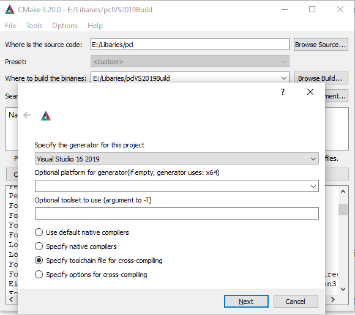
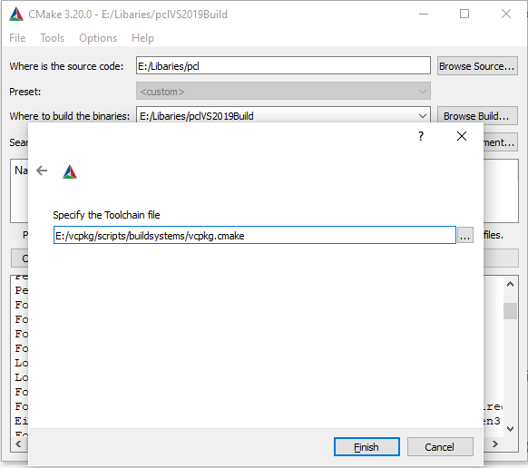

Using PCL on windows with VCPKG and CMake
This tutorial explains how to acquire Point Cloud Library on Microsoft Windows platforms using VCPKG.
For additional information how to use VCPKG, please see their documentation.
Last updated: 22. December 2021
Contents
Requirements
Download VCPKG sources to eg. c:\vcpkg preferably by cloning their repository.
Navigate to c:\vcpkg in powershell and run
.\bootstrap-vcpkg.bat
This will download vcpkg.exe.
PCL’s dependencies
PCL’s required dependencies available on VCPKG are:
- Boost
- FLANN
- Eigen3
PCL’s optional dependencies available on VCPKG are:
- VTK - for visualization module
- Feature OpenGL - required
- Feature Qt - optional for QVTK, used in apps
- GLEW - for simulation module
- Qhull - for convex/concave in surface module
- Qt - for apps that use Qt for GUI
- Google Test - for unit tests
- Google Benchmark - for benchmarks
- OpenNI2
- Realsense2
- PNG - for a single openni app
- Pcap - for Velodyne HDL driver
PCL’s optional dependencies not on VCPKG
- CUDA - only a port that verify its installed (version 10.1).
- GLUT
- OpenNI
- Ensenso
- davidSDK
- DSSDK
- RSSDK
Install PCL for usage
Running the following command in powershell in the VCPKG directory, will install PCL with default options as well as default triplet type (ie. x86).
./vcpkg install pcl
Note
This will build executables 2 times in release mode, as default host triplet is x64-windows on most modern PC systems, but vcpkg install x86 by default. So to fix it you can set host-triplet same as default triplet.
./vcpkg install pcl –host-triplet x86-windows
Or, you can use same custom triplet for both –triplet and –host-triplet
./vcpkg install pcl –triplet <same_custom_triplet_type> –host-triplet <same_custom_triplet_type>
Note
If there are new features or bugfixes that are not yet part of a release, you can try to use –head, which downloads the master of PCL.
You can see the available PCL version and options in VCPKG here.
To enable specific features, you need to write:
./vcpkg install pcl[qt,vtk]
And all features:
./vcpkg install pcl[*]
If you want to install with a different triplet type, the easiest way is:
./vcpkg install pcl –triplet triplet_type
ie.
./vcpkg install pcl –triplet x64-windows
This will acquire all the dependencies, build them and place the binaries in vcpkg/installed/triplet_type/bin for release and vcpkg/installed/triplet_type/debug/bin for debug.
Using dependencies installed with VCPKG in CMake projects
Use CMake to configure projects and remember to pass vcpkg\scripts\buildsystems\vcpkg.cmake as toolchain file to enable CMake to find all the dependencies installed with VCPKG.
See example below using the cmake window:

Fig 1. Cmake configuration |

Fig 2. Cmake configuration with vcpkg tool chain |
Find PCL using CMake
To use PCL in CMake project, take a look at Kunal Tyagi’s minimal example in this repository
Install PCL dependencies for contributions
If you want to contribute to PCL, the easiest way to get dependencies using vcpkg is to run the install command from our docker file
./vcpkg install dependencies_here –triplet triplet_type
Remember to omit the –clean-after-build, as this removes the source code of the dependencies and limit debugging capabilities for those.
To build PCL, you would have to get the source, preferably clone it using git.
Use CMake to configure PCL.